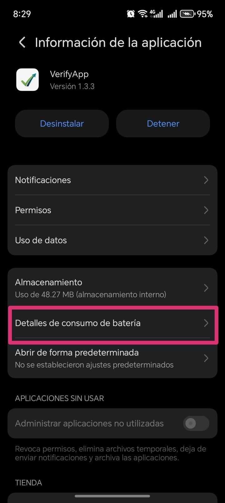
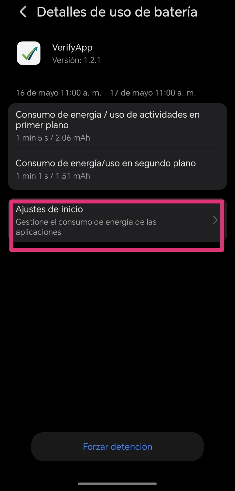
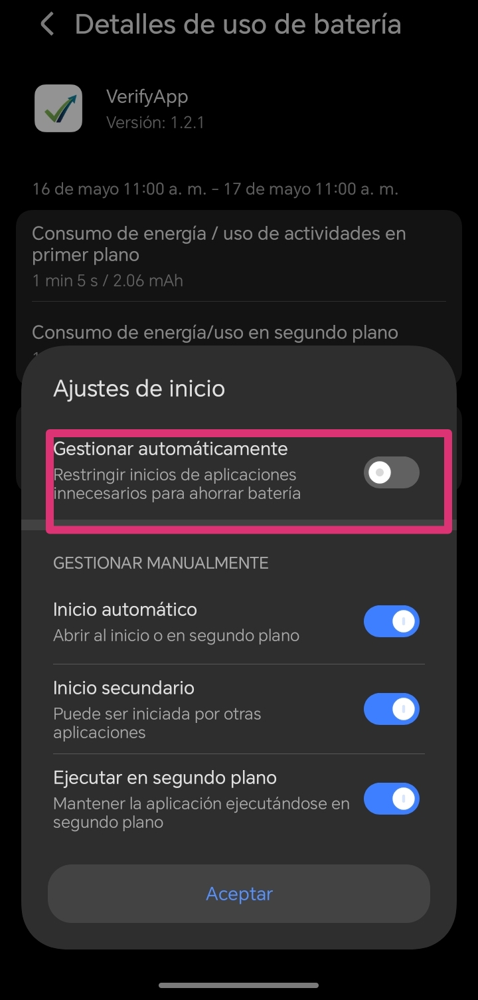

Configuración de Segundo Plano
Asegura el correcto funcionamiento de la app INCLUSO cuando la pantalla de tu teléfono esté bloqueada o apagada.
Nota importante sobre marcas de teléfono
El siguiente ejemplo muestra los pasos detallados en un teléfono de marca HONOR (MagicOS / EMUI). En otros celulares (como Samsung, Xiaomi, Motorola, OPPO, Realme), los nombres de los menús pueden variar ligeramente (ej. "Optimización de batería", "Inicio de aplicaciones" o "Sin restricciones"), pero el objetivo es el mismo: desactivar la gestión automática de batería para VerifyApp.
Información de la app
Ingresa a los ajustes de tu teléfono en la sección de Información de la app para VerifyApp (o mantén presionado el ícono de la app y selecciona "Información").

Paso 1Ajustes de inicio
Dentro del menú de detalles de batería, busca la opción que controla el arranque e inicio en segundo plano del sistema.

Paso 2Deshabilitar gestión automática
Desactiva el interruptor de "Gestionar automáticamente" para personalizar los permisos de ejecución.
Verifica que estén ACTIVADAS las 3 opciones:
- ✔ Inicio automático: Permitir encendido inicial.
- ✔ Inicio secundario: Permitir activación por notificaciones.
- ✔ Ejecución en segundo plano: Permitir funcionar con la pantalla apagada.

Paso 3📱 Equivale en otras marcas populares:
Ajustes > Aplicaciones > Permisos > Inicio automático (Activar) y en Ahorro de batería seleccionar Sin restricciones.
Ajustes > Aplicaciones > VerifyApp > Batería > Seleccionar No restringido.
Ajustes > Aplicaciones > VerifyApp > Uso de batería de la app > Seleccionar Sin restricciones.
Ajustes > Batería > Gestión de inicio de apps > Desactivar automático para VerifyApp y permitir segundo plano.